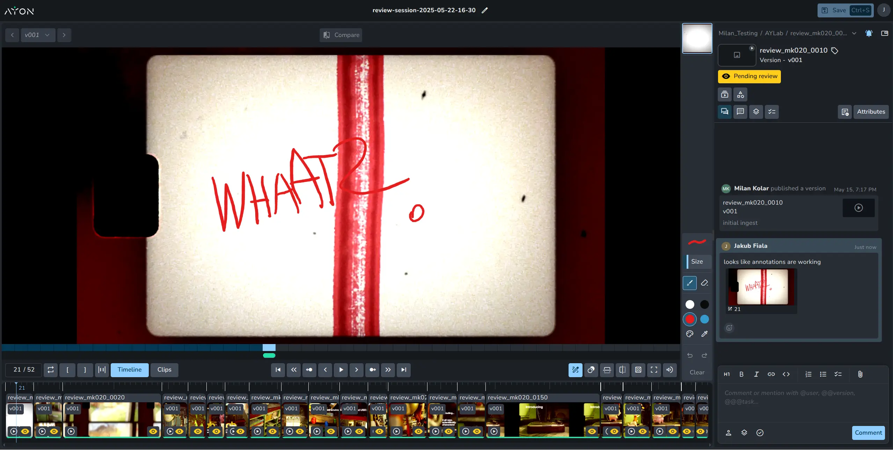

AYON
At Ynput, I've developed a new Review Sessions addon for the AYON platform. AYON is a popular pipeline toolkit for VFX studios. The Review sessions is a premium addon that enables you to create playlists of versions in a single timeline. It allows you to compare versions, add annotations, and collaborate with teammates in real time.
I was the principal developer on the Review Sessions project, developing a cutting-edge video sequence playback engine on the Web, including extensive professional tooling.